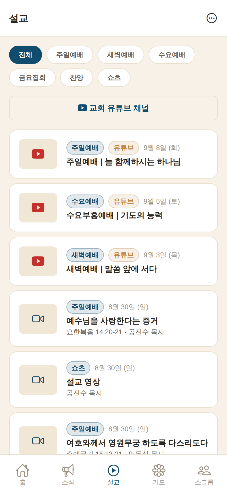
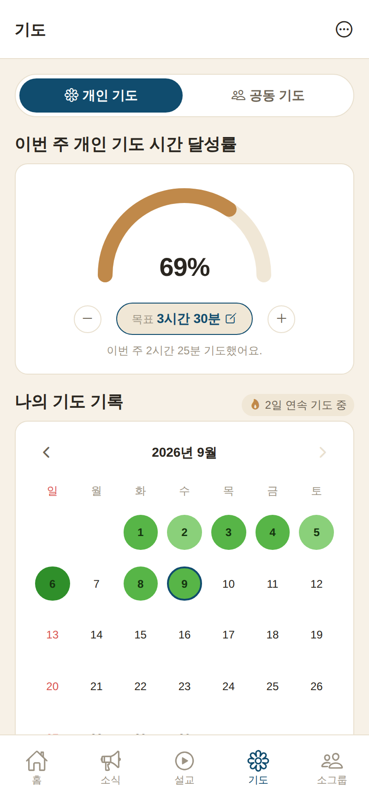
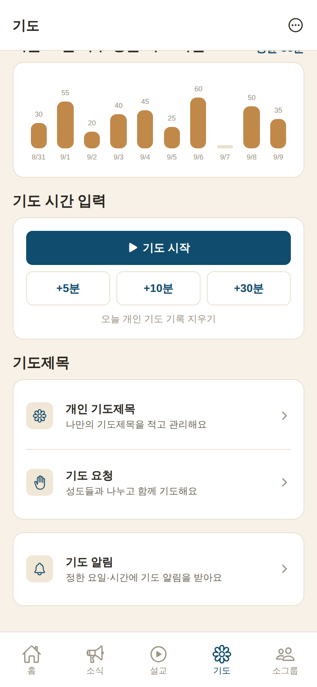
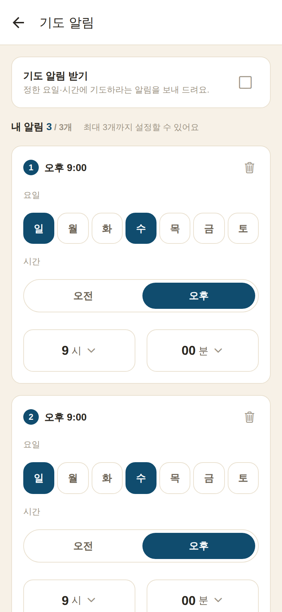
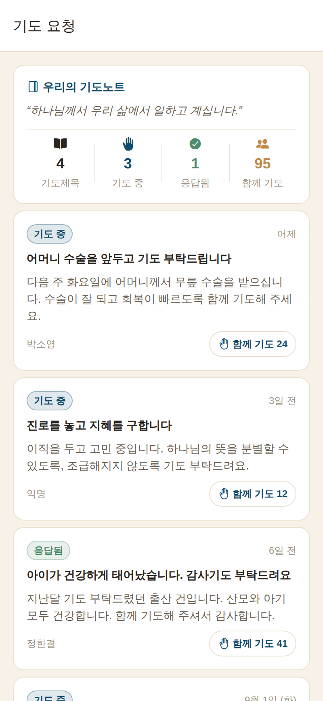
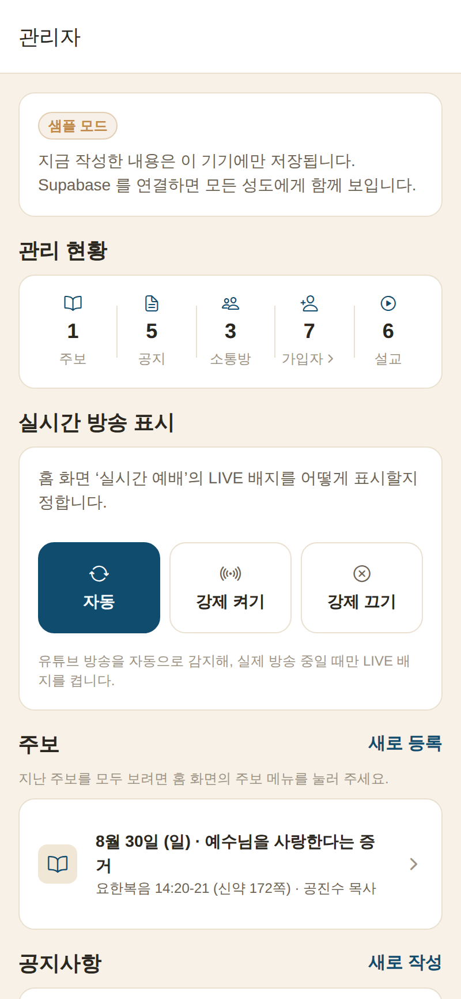

⛪
구리 목양교회 앱 사용설명서
화면별 사용 안내 · 2026-09-09
화면별로 어떻게 쓰는지 하나씩 안내해 드립니다.
›앱을 처음 열면 표어 시작 화면이 나옵니다. 세 가지 중 하나를 고르세요.
로그인 · 회원가입 · 손님
›로그인 — 이미 가입한 계정(이메일·비밀번호)으로 들어갑니다.
›회원가입 — 이름·이메일·비밀번호로 새로 가입합니다. 가입하면 나의 기도시간이 계정에 저장되어 기기를 바꿔도 이어집니다.
›손님으로 둘러보기 — 가입 없이 바로 사용합니다. 대부분 기능은 손님으로도 쓸 수 있어요.
📱 홈 화면에 앱처럼 설치할 수 있어요. 크롬(안드로이드)은 ⋮ → 앱 설치, 아이폰 사파리는 공유 → 홈 화면에 추가.
›교회의 소식을 한눈에 보는 첫 화면입니다.
오늘의 말씀
›맨 위 배너에 매일 바뀌는 성경 한 구절이 나옵니다.
이번 주 말씀 · 빠른 메뉴
›이번 주 말씀 카드를 누르면 최신 설교 영상으로 이동합니다.
›빠른 메뉴: 실시간 예배 이번 주 주보 온라인 헌금 기도 요청 새가족 등록
이번 주 예배 · 교회 소식 · 교회 안내
›이번 주 예배 — 이번 주 주보를 바로 확인합니다.
›교회 소식 — 공지를 옆으로 넘겨 보고, ‘더보기’로 전체 목록.
📡 교회 유튜브가 실시간 방송 중이면 ‘실시간 예배’에 LIVE 배지가 자동으로 켜집니다.
›교회의 공지사항과 소식을 모아 보는 곳입니다.
›목록에서 제목을 누르면 자세한 내용을 볼 수 있어요.
›공지 · 행사 · 소식으로 분류되고, 맨 위가 가장 최근입니다.

설교 — 카테고리 자동 분류
›교회 유튜브 채널 영상이 자동으로 나타납니다. (URL 복사·붙여넣기 불필요)
›제목을 읽어 카테고리로 자동 분류해요: 주일예배 새벽예배 수요예배 금요집회 찬양 쇼츠
›위쪽 카테고리 칩으로 원하는 종류만 골라 보고, 항상 최신순으로 정렬됩니다.
›누르면 유튜브 영상을 앱 안에서 바로 시청합니다. (쇼츠는 세로 화면)
›홈 화면 ‘이번 주 말씀’에도 채널의 가장 최신 영상이 자동으로 표시됩니다.
🛠 관리자는 설교 등록 화면의 ‘유튜브에서 불러오기’ 로 영상을 골라 제목·날짜·주소를 자동으로 채우고, 설교자·본문만 더하면 됩니다.

기도 — 개인 (달성률·달력)

기도 — 그래프·타이머·바로가기
›나의 기도시간을 기록하고 한눈에 봅니다. 화면 위 개인 · 공동 토글로 전환해요.
한눈에 보는 기도 (개인)
›달성률 게이지 — 이번 주 목표 대비 기도 시간. 목표는 − + 로 조정해요.
›나의 기도 기록(달력) — 기도한 날은 초록 동그라미(오래 기도할수록 진해요), 오늘은 테두리 표시. 연속 일수도 함께.
›최근 10일 평균 — 막대 그래프로 흐름을 봅니다.
기도 시간 입력
›기도 시작을 누르면 타이머가 돌고, 마치고 기록하기로 시간이 저장됩니다. 실제 경과 시간이 정확히 분 단위로 기록돼요.
›+5분 +10분 +30분 버튼으로 바로 더할 수도 있어요.
바로가기
›개인 기도제목 · 기도 요청 · 기도 알림으로 바로 이동합니다.
💡 로그인하면 나의 기도시간이 계정에 저장되어 다른 기기에서도 이어집니다. (손님은 이 기기에만 저장)
›온 성도가 함께 정한 공동 기도제목으로 기도하고, 내가 참여한 시간을 기록합니다.
›맨 위에 온 성도가 함께 기도한 시간(전체 누적)이 표시됩니다.
›각 제목의 이 제목으로 기도를 누르면 타이머가 돌고, 마치면 그 시간이 전체 누적에 계속 쌓입니다.

기도 알림 · 한 사람당 3개까지
›정한 요일과 시간에 “기도할 시간이에요 🙏” 알림을 휴대폰으로 받습니다.
켜는 방법
›기도 탭 → 기도 알림으로 들어가 위쪽 기도 알림 받기를 켜고 권한을 허용합니다.
›알림마다 요일(여러 개 가능)을 켜고, 시간은 오전/오후 · 시(1~12) · 분(00~59) 으로 정합니다.
한 사람당 최대 3개
›알림 추가를 누르면 새벽·점심·저녁처럼 서로 다른 시간의 알림을 최대 3개까지 만들 수 있어요. (예: 새벽 5:30 · 점심 12:00 · 밤 9:00)
›알림 오른쪽 위 휴지통으로 지우고, 다 정했으면 이 설정으로 저장을 누릅니다.
›테스트 알림 보내기로 알림이 잘 뜨는지 바로 확인할 수 있어요.
· 안드로이드/PC는 브라우저에서 바로 옵니다. · 아이폰은 사파리 → 홈 화면에 추가로 설치한 앱에서 열어야 알림이 옵니다. · 알림은 기기마다 따로 켜 주세요.
›소그룹(구역·목장)별 비공개 대화방입니다. 초대된 멤버만 입장·대화할 수 있고, 대화 내용도 멤버끼리만 보입니다.
누가 무엇을 하나요
›관리자가 소통방을 만들고, 앱에 가입한 성도 중에서 리더를 지정합니다.
›리더는 방 오른쪽 위 사람 아이콘 → 멤버 초대에서 성도 이름을 검색해 초대합니다.
›초대받은 멤버가 방에 들어와 대화하고, 필요하면 소통방 나가기도 할 수 있어요.
새 글 알림 (개인별)
›방의 사람 아이콘 → 이 소통방 알림을 켜면, 새 글이 올라올 때 앱을 닫아 두어도 알림을 받습니다. 방마다 각자 켜고 끌 수 있어요.
🔒 초대되지 않은 분에게는 소통방이 아예 보이지 않습니다. 초대는 앱에 가입(로그인)한 적이 있는 성도만 검색됩니다.
›예배 안내 — 주일·새벽·교육부서 예배 시간표를 봅니다.
›섬기는 사람들 — 교역자·직분자를 목사·전도사·장로 등으로 소개합니다.
›교회 주소 — 카카오맵·네이버지도·구글지도 길찾기, 주소 복사, 전화 걸기가 됩니다.
›헌금 안내 — 헌금 계좌를 안내하고, 계좌번호를 복사할 수 있어요.
›주보 — 이번 주 주보 이미지를 보고, 지난 주보도 목록에서 찾아봅니다.
›새가족 등록 — 처음 오신 분이 이름·연락처 등을 남기면 담당자에게 전달됩니다.
🌸
기도 · 기도제목 나눔
개인 기도제목 · 기도 요청

기도 요청 · 기도노트
개인 기도제목
›나만 보는 기도제목을 적고 관리합니다. 기도제목 추가로 새 제목을 적어요. (익명 여부 선택 가능)
›카드 오른쪽 위 ✎ 연필을 누르면 제목·내용을 수정하거나 삭제할 수 있어요.
›응답되면 기도 응답되었어요로 표시하고, 기도 요청으로 올리기로 성도들과 나눌 수 있어요.
기도 요청 · 우리의 기도노트
›맨 위 우리의 기도노트에 “하나님께서 우리 삶에서 일하고 계십니다.”와 함께 기도제목·기도 중·응답됨·함께 기도 현황이 한눈에 모입니다.
›성도들이 함께 기도를 눌러 함께 기도하고, 응답된 기도가 쌓이는 것을 다 같이 확인해요.
›오른쪽 위 ⋯ 아이콘을 누르면 열립니다.
›로그인 / 로그아웃 — 계정으로 로그인하거나 로그아웃합니다.
›교회 정보 — 담임목사·주소·전화·이메일·헌금·유튜브 등을 한곳에서 확인.
›예배 안내·섬기는 사람들·교회 주소·새가족 등록으로도 이동합니다.
🔒 손님으로 쓰다가 로그인하려면 여기 더보기 → 로그인에서 하면 됩니다.

관리자 홈 · 관리 현황
›관리자 계정으로 로그인하면, 각 화면에서 내용을 직접 등록·수정할 수 있어요.
›더보기 → 관리자 화면 열기에서 전체 관리로 들어갑니다. 맨 위 관리 현황에서 주보·공지·소통방·가입자·설교 개수를 한눈에 봅니다.
›주보·공지(소식)·설교·섬기는 사람들·공동 기도제목을 추가·수정·삭제.
가입자 현황·삭제
›관리 현황의 가입자 숫자를 누르면 가입자 명단(이름·역할·가입일)이 열립니다.
›각 성도의 휴지통으로 계정을 삭제할 수 있어요. (계정·개인 기록이 함께 삭제, 본인 계정은 삭제 불가)
소통방 만들기
›소통방 → 새로 등록에서 방을 만들고, 성도를 검색해 리더를 지정합니다. 이후 초대·대화는 리더와 멤버가 진행합니다.
›새가족 등록 명단은 관리자만 볼 수 있어요.
🔑 관리자 권한이 필요하면 교회 담당자에게 문의해 주세요.